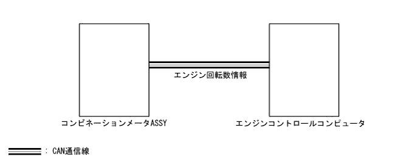

Meter & Gauge System Tachometer Malfunction |
)
)| Step 1 | Perform TaSCAN Active Test (Combination Meter) |
Using SST (TaSCAN), follow the prompts on the screen to display the "Active Test" screen and perform the inspection.
| Item Name | Item Description | Inspection Item |
|---|---|---|
| Tachometer | Engine Speed Indication Switching | 7000、6000、5000、4000、3000、2000、1000、0(r/min) |
| Result | Proceed to |
|---|---|
| Each engine speed in the Active Test is displayed smoothly | A |
| Each engine speed in the Active Test is not displayed smoothly | B |
|
| ||||
| A | |
| Step 2 | Read TaSCAN Data (Combination Meter) |
Using SST (TaSCAN), follow the prompts on the screen to display the "Active Test" screen and perform the inspection.
| Item Name (Symbol) | Item Description/Display Range | Standard Value | Remarks |
|---|---|---|---|
| Engine speed (ESPD) | Engine speed input Display range: 0 to 12750 [r/min] | Engine running Almost synchronized with engine speed | - |
| Result | Proceed to |
|---|---|
| Data monitor value is almost the same as tachometer value | A |
| Data monitor value differs from tachometer value | B |
|
| ||||
| A | |
| Step 3 | Read DTC |
Using SST (TaSCAN), check whether engine system DTCs are output.
| Result | Proceed to |
|---|---|
| No DTC output | A |
| DTC output | B |
|
| ||||
| A | |
| Step 4 | Read TaSCAN Data (Engine Control Computer) |
Using SST (TaSCAN), follow the prompts on the screen to display the "ECU Data Monitor" screen and perform the inspection.
| Item Name (Symbol) | Item Description/Display Range | Standard Value | Remarks |
|---|---|---|---|
| Engine speed (ESPD) | Engine Speed | Engine running | - |
| Result | Proceed to |
|---|---|
| Value on screen differs from tachometer | A |
| Value on screen is almost the same as tachometer | B |
|
| ||||
| A | |
| Step 5 | Replace Combination Meter Assembly |
Replace the combination meter assembly with a new or known good one (see) and check the operation.
| Result | Proceed to |
|---|---|
| Operates normally | A |
| Does not operate normally | B |
|
| ||||
| A | ||
| ||